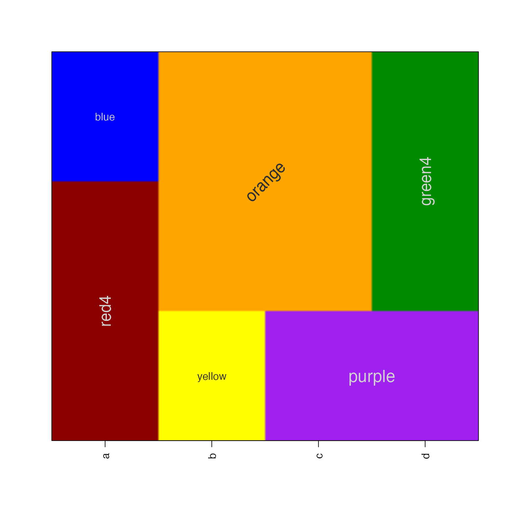
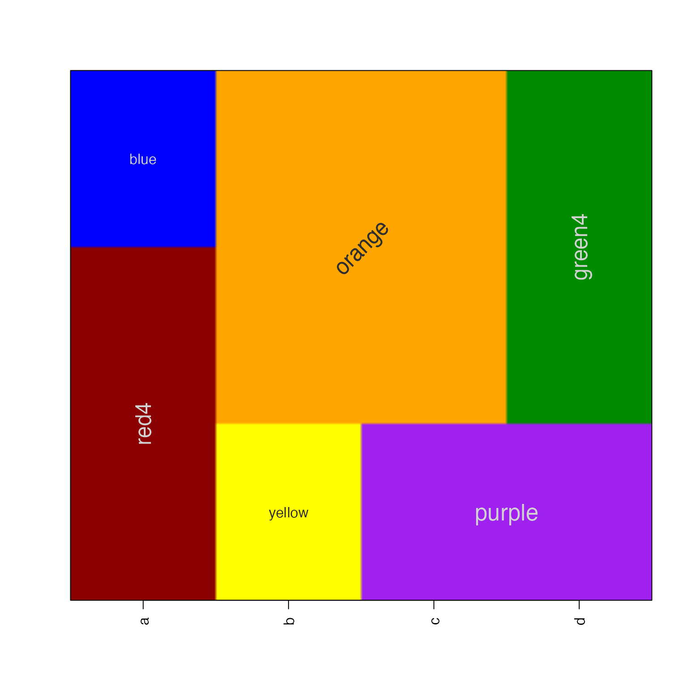

Display color raster image using a matrix of colors
Source:R/jamba-imagebycolors.R
imageByColors.RdDisplay color raster image using a matrix of colors
Usage
imageByColors(
x,
useRaster = FALSE,
fixRasterRatio = TRUE,
maxRatioFix = 100,
xaxt = "s",
yaxt = "s",
doPlot = TRUE,
cellnote = NULL,
cexCellnote = 1,
srtCellnote = 0,
fontCellnote = 1,
groupCellnotes = TRUE,
groupBy = c("column", "row"),
groupByColors = TRUE,
adjBy = c("column", "row"),
adjustMargins = FALSE,
interpolate = getOption("interpolate", TRUE),
verbose = FALSE,
xpd = NULL,
bty = graphics::par("bty"),
flip = c("none", "y", "x", "xy"),
keepTextAlpha = FALSE,
doTest = FALSE,
add = FALSE,
...
)Arguments
- x
matrixordata.framecontaining colors- useRaster
logicalsent toimageDefaultto enable raster rendering, as opposed to polygon rendering. This parameter is highly recommended when the matrix is large (>50 columns or rows).- fixRasterRatio
logicalsent toimageDefault.- maxRatioFix
numericsent toimageDefault.- xaxt, yaxt
charactervalues compatible withparto determine whether x- and y-axes are plotted. Set both to "n" to suppress display of axes.- doPlot
logicalwhether to create a plot, or simply return data which would have been used to create the plot.- cellnote
matrixordata.frameof labels to be displayed on the image. If groupCellnotes==TRUE labels will be placed in the center of consecutive cells with the same label and identical color. Currently, cell text is colored usingsetTextContrastColorwhich uses either white or black depending upon the brightness of the background color.- cexCellnote, srtCellnote, fontCellnote
numericvectors, with values applied to cellnote text to be compatible withgraphics::par("cex"),graphics::par("srt"), andgraphics::par("font"), respectively. If supplied a matrix or data.frame with it is used as-is or expanded to equivalent dimensions ofx. If the vector is named by colnames(x) then it is applied by column in order, otherwise it is applied by row, with values recycled to the number of columns or rows, respectively. NotecexCellnotecan also be a list, with the list elements being applied to individual cells in order. If the list is named by colnames(x), each list element is applied to values in each column, in order. In future this parameter may also accept a matrix of cex values as input. Final note: values are applied to each cell, but when cell labels are combined with groupCellnotes==TRUE, the value for the first matching cell is used. Remember that values are placed by coordinate, bottom-to-top on the y-axis, and left-to-right on the x-axis.- groupCellnotes
logicalwhether to group labels where consecutive cells contain the same label and identical cell colors, thus only displaying one label in the center of these groups.- groupBy
charactervalue indicating the direction to group cellnotes, whengroupCellnotes=TRUE:"row"will group cellnote values by row;"column"will group cellnote values by column. By default, it will first group cellnotes by"row"then by"column".- groupByColors
logicalindicating whether the cellnote grouping should also include the cell color. WhengroupByColors=FALSE, cellnote values will be grouped together regardless whether the underlying colors change, which may be preferred when applying text label to topographical data.- adjBy
charactervalue indicating how to apply adjustments for cexCellnote, srtCellnote, and fontCellnote, as described above.- adjustMargins
logicalindicating whether to adjust the axis label margins to ensure enough room to draw the text rownames and colnames.- interpolate
logicalwhether to implement image interpolation, by default TRUE when useRaster=TRUE.- verbose
logicalwhether to print verbose output.- xpd
NULL or
logicalused forgraphics::par("xpd")whether to crop displayed output to the plot area.If xpd=NULL then
graphics::par("xpd")will not be modified, otherwisegraphics::par("xpd"=xpd)will be defined while adding any cell notes, then reverted to its previous value afterward. This parameter is mainly useful when cellnote labels may overhang the plot space, and would be cropped and not visible ifgraphics::par("xpd"=TRUE).
- bty
characterused to control box type, defaultgraphics::par("bty")- flip
characterstring, default "none", with optional axis flip:none: perform no axis flip
x: flip x-axis orientation
y: flip y-axis orientation
xy: flip both x- and y-axis orientation
- keepTextAlpha
logicaldefaulit FALSE, passed tosetTextContrastColor(), whether the text label color should inherit the alpha transparency from the background color. If TRUE then fully transparent background colors will not have a visible label.- doTest
logicalwhether to run a test showing basic features.- add
logical, default FALSE, whether to add to an existing device, otherwise it creates a new plot.- ...
Additional arguments are ignored.
Value
list invisibly, with elements sufficient to create an
image plot. This function is called for the byproduct of creating
an image visualization.
Details
This function is similar to image except that
it takes a matrix which already has colors defined for each cell.
This function calls imageDefault which enables updated
use of the useRaster functionality.
Additionally, if cellnote is supplied, which contains a matrix
of labels for the image cells, those labels will also be displayed.
By default, labels are grouped, so that only one label is displayed
whenever two or more labels appear in consecutive cells. This behavior
can be disabled with groupCellnotes=FALSE.
The groupCellnotes behavior uses breaksByVector() to
determine where to place consecutive labels, and it applies this logic
starting with rows, then columns. Note that labels are only grouped when
both the cell color and the cell label are identical for consecutive
cells.
In general, if a large rectangular set of cells contains the same label, and cell colors, the resulting label will be positioned in the center. However, when the square is not symmetric, the label will be grouped only where consecutive columns contain the same groups of consecutive rows for a given label.
It is helpful to rotate labels partially to prevent overlaps, e.g. srtCellnote=10 or srtCellnote=80.
To do:
Detect the size of the area being labeled and determine whether to rotate the label sideways.
Detect the size of the label, compared to its bounding box, and resize the label to fit the available space.
Optionally draw border around contiguous colored and labeled polygons. Whether to draw border based only upon color, or color and label, or just label... it may get confusing.
Label proper contiguous polygons based upon color and label, especially when color and label are present on multiple rows and columns, but not always the same columns per row.
See also
Other jam plot functions:
adjustAxisLabelMargins(),
coordPresets(),
decideMfrow(),
drawLabels(),
getPlotAspect(),
groupedAxis(),
imageDefault(),
minorLogTicksAxis(),
nullPlot(),
plotPolygonDensity(),
plotRidges(),
plotSmoothScatter(),
shadowText(),
shadowText_options(),
showColors(),
sqrtAxis(),
usrBox()
Examples
a1 <- c("red4","blue")[c(1,1,2)];
b1 <- c("yellow","orange")[c(1,2,2)];
c1 <- c("purple","orange")[c(1,2,2)];
d1 <- c("purple","green4")[c(1,2,2)];
df1 <- data.frame(a=a1, b=b1, c=c1, d=d1);
# default using polygons
imageByColors(df1, cellnote=df1);
 # using useRaster, edges are slightly blurred with small tables
imageByColors(df1, cellnote=df1, useRaster=TRUE);
# some text features, rotation, font size, etc
imageByColors(df1, cellnote=df1, useRaster=TRUE, adjBy="column",
cexCellnote=list(c(1.5,1.5,1), c(1,1.5), c(1.6,1.2), c(1.6,1.5)),
srtCellnote=list(c(90,0,0), c(0,45), c(0,0,0), c(0,90,0)));

# using useRaster, edges are slightly blurred with small tables
imageByColors(df1, cellnote=df1, useRaster=TRUE);
# some text features, rotation, font size, etc
imageByColors(df1, cellnote=df1, useRaster=TRUE, adjBy="column",
cexCellnote=list(c(1.5,1.5,1), c(1,1.5), c(1.6,1.2), c(1.6,1.5)),
srtCellnote=list(c(90,0,0), c(0,45), c(0,0,0), c(0,90,0)));
